Низкооборотный однофазный электрогенератор с дисковым ротором на постоянных магнитах (18 полюсов, 19 обмоток)
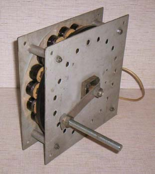
1. Введение
При использовании низкооборотных приводов, ось которых напрямую соединена с осью электрического генератора, возникает проблема получения достаточно высокого выходного напряжения и электрической мощности. Один из способов ее решения - многополюсный электрогенератор с ротором на постоянных магнитах. Электрогенератор с ротором на постоянных магнитах не имеет коллектора и щеток, что позволяет существенно повысить его надежность и время работы без обслуживания и ремонта. Применение постоянных магнитов с высокими значениями остаточной индукции и коэрцитивной силы позволяет существенно улучшить электрические характеристики генератора или уменьшить его габариты.
Электрогенератор с ротором на постоянных магнитах может быть построен по различным схемам, отличающимся друг от друга совместным расположением обмоток и магнитов. Магниты с чередующейся полярностью располагаются на роторе генератора. Обмотки с чередующимся направлением намотки располагаются на статоре генератора. Если ротор и статор представляют из себя соосные диски, то такой тип генератора назовем аксиальным или дисковым (рис. 1.1). Возможны различные модификации дискового генератора, когда, например, магниты на немагнитном диске располагаются между двумя дисками с обмотками (рис. 1.2) или немагнитный диск с обмотками располагается между двумя дисками с магнитами (рис. 1.3).
Рис. 1.1. Схема электрогенератора с ротором на постоянных магнитах аксиального (дискового) типа.

Рис. 1.2. Схема электрогенератора с ротором на постоянных магнитах аксиального (дискового) типа (вариант с магнитами между обмотками).
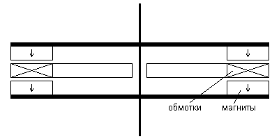
Рис. 1.3. Схема электрогенератора с ротором на постоянных магнитах аксиального (дискового) типа (вариант с обмотками между магнитами).
Если ротор и статор представляют из себя коаксиальные соосные цилиндры, то такой тип генератора назовем радиальным или цилиндрическим (рис. 1.4). В генераторе радиального типа ротор может быть внутренним (рис. 1.4) или внешним (рис. 1.5) по отношению к статору. Или же обмотки могут быть расположены между двумя роторами с магнитами (рис. 1.6).
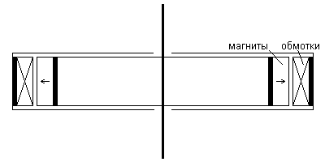
Рис. 1.4. Схема электрогенератора радиального (цилиндрического) типа с внутренним ротором на постоянных магнитах.
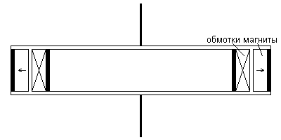
Рис. 1.5. Схема электрогенератора радиального (цилиндрического) типа с внешним ротором на постоянных магнитах.
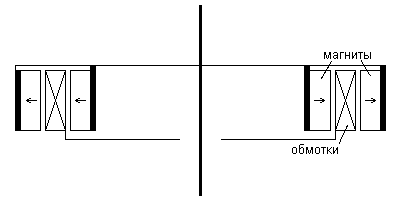
Рис. 1.6. Схема электрогенератора радиального (цилиндрического) типа с обмотками, расположенными между двумя роторами с постоянными магнитами.
Если число обмоток равно числу магнитных полюсов, то при прохождении магнитного полюса мимо сердечника обмотки за счет сил притяжения возникает скачок момента на валу ("залипание" ротора). Для ослабления этого эффекта в однофазном генераторе можно увеличить или уменьшить число обмоток (m) на единицу или на два по сравнению с числом магнитов (n) (см. таблицу 1.1). Например, в простейшем случае число магнитных полюсов может быть равно двум, а число обмоток - трем (рис. 1.7), причем выводы обмоток соединяются последовательно. Подобное решение использовано в конструкции 6-полюсных генераторов [1] (число полюсов магнита n = 6, число обмоток m = 7) и [6] (число полюсов магнита n = 6, число обмоток в каждой из двух групп m = 5, дополнительно группы обмоток сдвинуты друг относительно друга на угол в 36 градусов). Возможны и другие соотношения между числом магнитных полюсов и обмоток. Можно вообще отказаться от применения стальных сердечников в обмотках, тогда при любом положении ротора скачков момента на валу в режиме холостого хода не будет. Число обмоток может быть при этом равно числу магнитов. Уменьшить эффект "залипания" ротора позволяет также трехфазная схема генератора (рис. 1.7). При ее построении число магнитов (полюсов) может быть кратно двум, а число обмоток - трем с тем же коэффициентом или вдвое меньшим (см. таблицу 1.2). Выводы обмоток могут соединяться звездой или треугольником [7].

Рис. 1.7. Устройство простейшего электрогенератора.
Таблица 1.1. Пример соотношения между числом магнитных полюсов и числом обмоток для однофазного электрогенератора.
| Число полюсов, n | 2 | 4 | 6 | 8 | 10 | 12 | 14 | 16 | 18 |
| Число обмоток, m = n -1 | - | 3 | 5 | 7 | 9 | 11 | 13 | 15 | 17 |
| Число обмоток, m = n + 1 | 3 | 5 | 7 | 9 | 11 | 13 | 15 | 17 | 19 |
| Число обмоток, m = n - 2 | - | - | 4 | 6 | 8 | 10 | 12 | 14 | 16 |
| Число обмоток, m = n + 2 | - | 6 | 8 | 10 | 12 | 14 | 16 | 18 | 20 |
Таблица 1.2. Пример соотношения между числом магнитных полюсов и числом обмоток для трехфазного электрогенератора.
| Число полюсов, n | 2 | 4 | 6 | 8 | 10 | 12 | 14 | 16 | 18 |
| Число обмоток, m = 3 · n / 2 | 3 | 6 | 9 | 12 | 15 | 18 | 21 | 24 | 27 |
| Число обмоток, m = 3 ∙ n / 4 | - | 3 | - | 6 | - | 9 | - | 12 | - |
2. Конструкция однофазного электрогенератора
Однофазный электрогенератор, внешний вид которого показан на рис. 2.2, собран по схеме рис. 1.1. Эскиз конструкции приведен на рис. 2.1.
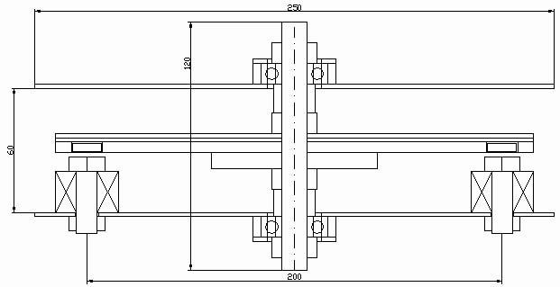
Рис. 2.1. Эскиз однофазного электрогенератора.
На квадратном стальном основании (статор) расположены по окружности катушки в виде цилиндрических соленоидов со стальными сердечниками (19 штук). В центре основания закреплен подшипник, в который вставляется ось ротора. Ротор представляет из себя укрепленный на оси стальной диск, к которому с использованием прокладки крепятся постоянные магниты (18 штук) с чередующимся направлением намагниченности. Магниты представляют из себя аксиально намагниченные диски состава неодим-железо-бор. Намагничивание магнитов производилось в установке намагничивания [13]. Расчет катушек генератора выполнен с помощью программы Coil [3]. Катушки генератора соединены последовательно. Для проверки правильности фазировки катушек и качества их намотки можно использовать следующий прием. С генератора снимается ротор. Выводы генератора подключаются к источнику постоянного тока напряжением до 12 вольт. С помощью тесламетра [8] производится контроль магнитной индукции на сердечниках катушек. Направление магнитной индукции должно чередоваться от начальной до конечной катушки, а на начальной и конечной катушке совпадать. Величина магнитной индукции на поверхности сердечников всех катушек должна быть примерно одинаковой.
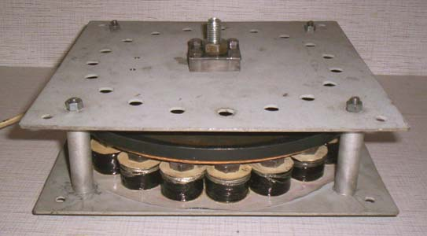
Рис. 2.2. Внешний вид однофазного электрогенератора.
3. Технические характеристики однофазного электрогенератора:
Электрические характеристики генератора достаточно хорошо соответствуют расчетным [4, 9].
4. Расчеты однофазного электрогенератора
Расчет магнитной системы однофазного электрогенератора произведен методом конечных элементов [10] с помощью программы Ansoft Maxwell [2]. На рис. 4.1 показана расчетная трехмерная модель магнитной системы электрогенератора.

Рис. 4.1. Трехмерная расчетная модель магнитной системы однофазного электрогенератора в программе Ansoft Maxwell [2]. Шаг сетки 5 мм. Стальные детали показаны серым цветом, постоянные магниты - красным и синим, обмотки не показаны.
Стальные детали электрогенератора изготовлены из малоуглеродистой стали, магнитные свойства которой представлены на рис. 4.2.

Рис. 4.2. Кривая намагничивания малоуглеродистой стали, использованной при изготовлении однофазного электрогенератора.
В электрогенераторе использованы цилиндрические постоянные магниты состава Nd-Fe-B типоразмера Д14 х 4 (на рис. 4.1 изображены красным и синим цветом) со следующими магнитными свойствами: остаточная индукция 1.1 Тл, коэрцитивная сила по намагниченности 850 кА/м. Постоянные магниты намагничены аксиально в установке импульсного намагничивания [13]. Контроль качества намагничивания выполнялся с помощью тесламетра [8]. Так как ток в обмотках генератора предполагается равным нулю (реакция якоря отсутствует), то в расчетной модели обмотки отсутствуют. На рис.4.3 показана зависимость величины магнитной индукции на оси сердечника катушки от расстояния от основания электрогенератора. Среднее расчетное значение магнитной индукции в сердечнике катушки 0.999 Тл.

Рис. 4.3. Магнитная индукция на оси сердечника катушки электрогенератора при максимальном потокосцеплении и нулевом токе в катушке. Магнитная индукция в воздушном зазоре между магнитом и полюсным наконечником катушки 0.565 Тл (среднее расчетное значение) соответствует измеренной 0.573 Тл. Среднее расчетное значение магнитной индукции в сердечнике катушки 0.999 Тл.
Рассчитанное значение магнитной индукции в воздушном зазоре 0.565 Тл (рис. 4.3) не слишком сильно отличается от измеренного с помощью тесламетра [8] (0.573 Тл - усредненное измеренное значение по всем полюсам). Таким образом, можно сделать вывод, что расчетная модель достаточно хорошо соответствует реальной конструкции. Среднее расчетное значение магнитной индукции в сердечнике катушки на длине 20 мм B0 ≈ 0.999 Тл может быть подставлено в программу PM_Generator [4]. Результат расчета показан на рис. 4.4 и частично в таблице 4.1.

Рис. 4.4. Расчет параметров однофазного электрогенератора с помощью программы PM_Generator [4].
Таблица 4.1. Соответствие рассчитанных и измеренных параметров электрогенератора.
| Параметр | Рассчитанное значение | Измеренное значение |
| Число витков одной катушки | ≈241 | 250 |
| Внутреннее сопротивление RIN, Ом | 10.03 | 11.0 |
| Напряжение холостого хода Uxx, В (частота вращения ротора 1 об./с) | 9.145 | 7.3 |
Соответствие измеренных и рассчитанных значений приемлемое с учетом того, что форма выходного напряжения генератора отличается от синусоидальной (рис. 4.5), а удельное сопротивление обмоточного провода, как правило, несколько больше справочного значения для меди (1.67 ∙ 10-8 Ом ∙ м [11]) из-за наличия примесей.

Рис. 4.5. Выходное напряжение холостого хода однофазного электрогенератора при частоте вращения ротора 1 об./с.
5. Испытания однофазного электрогенератора
Активное сопротивление генератора при последовательном включении обмоток измерено мультиметром APPA-107N и составило 11.0 + 0.05 Ом.
Индуктивность электрогенератора была измерена на переменном токе методом амперметра-вольтметра (рис. 5.1) на частотах 3, 5 и 10 Гц. Последовательно соединенные катушки генератора L подключались к выходу усилителя мощности низкой частоты [12] через балластный резистор R1.1R1.2 сопротивлением 10 Ом (точная подстройка осуществлялась с помощью переменного резистора R1.2). На вход усилителя мощности подавался сигнал с выхода генератора Г3-118. С помощью первого канала осциллографа UTD2102CEL-R измерялась амплитуда напряжения на балластном резисторе R1.1R1.2. По ней рассчитывалась амплитуда тока I0 через обмотки фазы L. Амплитудное значение напряжения на выводах фазы U0 измерялось с помощью второго канала осциллографа. Полное сопротивление фазы ZL рассчитывалось как отношение амплитудных значений напряжения на фазе и тока через нее, а далее по известному активному сопротивлению R находилась ее индуктивность L с использованием формул:


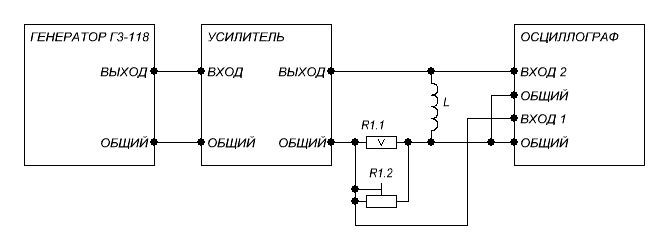
Рис. 5.1. Схема для измерения индуктивности на переменном токе методом амперметра-вольтметра.
В таблице 5.1 приведены значения измеренной на частотах 3, 5, 10 Гц индуктивности электрогенератора.
Таблица 5.1. Индуктивность однофазного электрогенератора, измеренная на разных частотах.
|
|
Частота f, Гц |
|||
|
3 |
5 |
10 |
||
|
Последовательное соединение обмоток |
I0, А |
0.3 |
0.1 |
0.1 |
|
U0 , В |
3.5 |
1.25 |
1.45 |
|
|
ZL, Ом |
11.7 |
12.5 |
14.5 |
|
|
R, Ом |
11.0 |
11.0 |
11.0 |
|
|
L, мГн |
211 |
189 |
150 |
|
На рис. 5.2 показан график зависимости индуктивности от частоты измерений. С увеличением частоты измерительного напряжения индуктивность уменьшается и наоборот. Сплошной линией показана полиномиальная аппроксимация (степени 2) измеренной индуктивности, которая на нулевой частоте дает оценку индуктивности примерно 250 мГн.

Рис. 5.2. Зависимость индуктивности однофазного электрогенератора, измеренной методом амперметра-вольтметра, от частоты измерительного напряжения.
При частоте вращения ротора 2 об./с частота выходного напряжения составит 18 Гц. На этой частоте индуктивное сопротивление обмоток генератора с индуктивностью около 150 мГн составит примерно 17 Ом, активное сопротивление при этом равно примерно 11 Ом. Если в начальный момент времени магнитные полюса ротора находятся напротив полюсных наконечников катушек фазы, то потокосцепление изменяется по косинусоидальному закону:
а ЭДС фазы - по синусоидальному:
Если генератор подключен к активной нагрузке (рис. 5.3), то ток в цепи будет изменяться по закону:
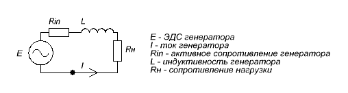
Рис. 5.3. Схема подключения обмоток электрогенератора к активной нагрузке.
На рис. 5.4 показаны нормализованные графики изменения потокосцепления, ЭДС и тока обмоток во времени: частота ЭДС 18 Гц, активное внутреннее сопротивление генератора 11.0 Ом, индуктивность 150 мГн, сопротивление нагрузки 11 Ом. Фазовый сдвиг между ЭДС и током при этом составляет примерно 380. Если сопротивление нагрузки будет стремиться к нулю, то фазовый сдвиг между ЭДС и током будет возрастать примерно до 570. Из рис. 5.4 видно, что ток находится довольно близко к противофазе относительно потокосцепления, то есть создает магнитное поле, направленное противоположно полю, генерируемому магнитами ротора, тем самым уменьшая магнитную индукцию в сердечнике катушки и, соответственно, ЭДС (реакция якоря).
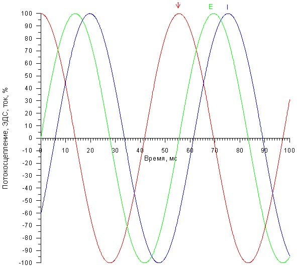
Рис. 5.4. Изменение потокосцепления, ЭДС и тока однофазного электрогенератора во времени при подключенной активной нагрузке (потокосцепление - красная линия, ЭДС - зеленая линия, ток - синяя линия).
Для снятия зависимости выходного напряжения генератора от частоты вращения ротора при разных нагрузках был собран стенд на основе настольного вертикально-фрезерного станка Корвет-413 с регулируемой частотой вращения оборотов шпинделя (рис. 5.5). В дальнейшем на основе полученного опыта был сконструирован специальный стенд для испытаний низкооборотных электрогенераторов [5].
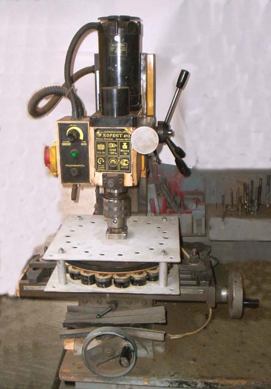
Рис. 5.5. Стенд для снятия зависимости выходного напряжения электрогенератора от частоты вращения ротора при разных нагрузках.
Генератор крепится на столе станка. Стол станка перемещается в продольном и поперечном направлении, чтобы ось ротора генератора совпала с осью шпинделя станка. Далее ось ротора зажимается в патроне. К выводам генератора подключается осциллограф UTD2102CEL-R и резистивная нагрузка (при необходимости). Шпиндель станка приводится во вращение с заданной частотой. С помощью осциллографа определяется частота вращения ротора генератора (частота выходного напряжения генератора делится на девять) и его выходное напряжение (методом усреднения амплитудных значений и последующего вычисления действующего значения напряжения). Зависимость действующего значения выходного напряжения генератора от частоты вращения ротора при разных нагрузках представлена на рис. 5.6.
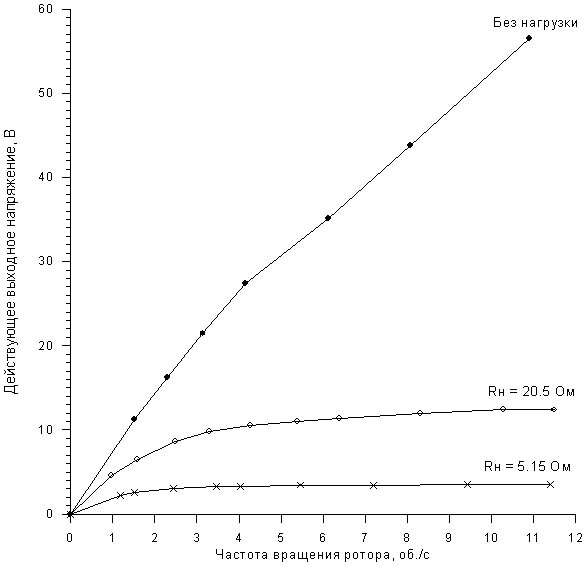
Рис. 5.6. Зависимость действующего выходного напряжения однофазного электрогенератора от частоты вращения ротора при разной нагрузке.
Выходное напряжение генератора без нагрузки растет примерно линейно с увеличением частоты вращения. При работе генератора на нагрузку выходное напряжение генератора при увеличении частоты вращения ротора достигает некоторого максимального значения, при котором действующее значение выходного тока через нагрузку равно примерно 0.6 А, т. е. генератор переходит в режим источника тока. Этот максимум достижимого напряжения зависит от сопротивления нагрузки (чем меньше сопротивление нагрузки, тем меньше максимально достижимое с ростом частоты вращения ротора выходное напряжение). Ниже на рис. 5.7 - 5.9 показано выходное напряжение электрогенератора при разных нагрузках и сходных частотах вращения ротора.
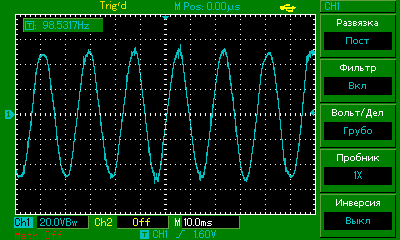
Рис. 5.7. Выходное напряжение электрогенератора без нагрузки при частоте вращения ротора 6.1 об./с (среднее амплитудное значение напряжения 49.7 В).
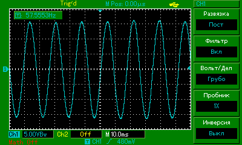
Рис. 5.8. Выходное напряжение электрогенератора под нагрузкой 20.5 Ом при частоте вращения ротора 6.4 об./с (среднее амплитудное значение напряжения 16.1 В).
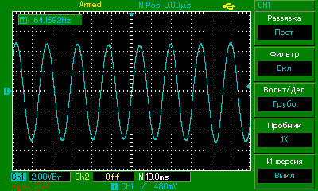
Рис. 5.9. Выходное напряжение электрогенератора под нагрузкой 5.15 Ом при частоте вращения ротора 7.2 об./с (среднее амплитудное значение напряжения 4.9 В).
Ссылки:
14.11.2007
04.07.2018
27.10.2018
21.12.2018
Альтернативные источники энергии
Компьютеры и
Интернет
Магнитные поля
Механотронные системы
Перспективные
разработки
Электроника и
технология